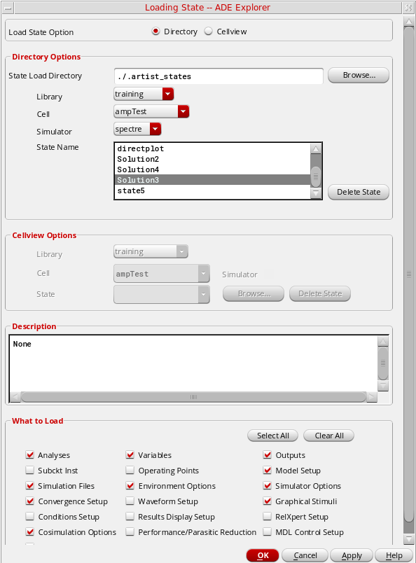
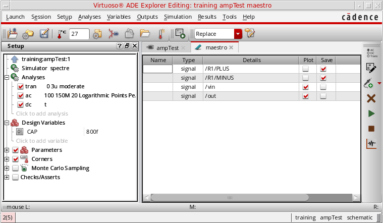
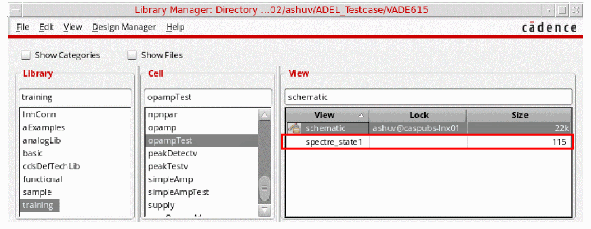
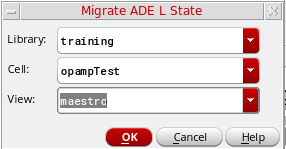
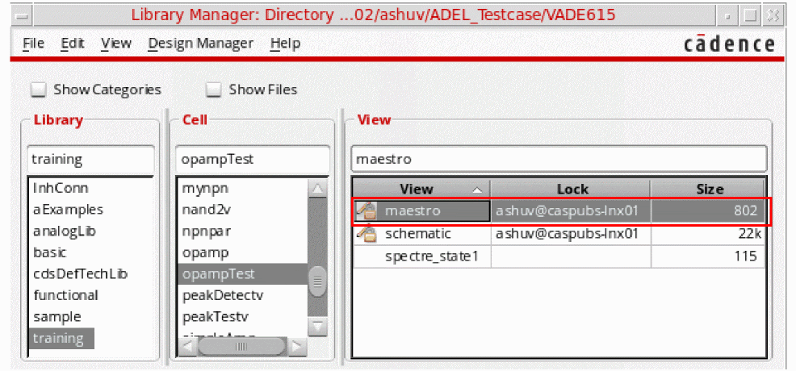

E
Migrating From ADE L to ADE Explorer
The Virtuoso ADE Explorer provides a seamless migration from ADE L to ADE Explorer. The following sections provide details about how to migrate states or cellviews saved using ADE L into ADE Explorer:
Migrating an ADE L Setup to ADE Explorer
You can use one of the following ways to load the design and setup saved using ADE L in ADE Explorer:
- Migrating ADE L Setup Using Load State Form
- Migrating an ADE L State by Opening the Cellview in ADE Explorer
- Migrating ADE L Setup Using SKILL
Migrating ADE L Setup Using Load State Form
If you have a setup created using Virtuoso Analog Design Environment L (ADE L), you can open it with the ADE Explorer application. To do this, you need to have the setup states saved in the ADE L setup, which you can load in Explorer.
-
In CIW, select the design (library, cell, and view) that you want to load in Explorer and open the design in Schematic Editor. Now, follow the steps explained in the Opening Virtuoso ADE Explorer section to create a new cellview,
maestro, and open ADE Explorer. -
In ADE Explorer, choose Session – Load ADE L State. The Loading State -- ADE Explorer form appears.
In this form, select the previously-saved ADE L state and specify the following options: -
Select one of the option buttons Directory or Cellview to indicate that you want to load the state from a directory or from a cellview. The default option is Directory.
- When the Directory option is selected, the fields in the Directory Options group box appear enabled. You need to specify a path in the State Load Directory by typing it in or by using the Browse button to locate it. Select the desired values in the Library, Cell, and Simulator fields. State Name specifies all the saved states for the cell and simulator combination that you specified. Select the state name you want to load.
- When you select the Cellview option, the fields in the Cellview Options group box appear enabled and those in the Directory Options group box appear disabled. You need to specify a Library, Cell and State you want to load. You may either type these in or specify them using the Browse button.
- The Description field shows a short description about the selected state.
- The substates displayed in the What to Load section are based on the substates in the selected state. You can enable or disable any of the substates individually by selecting the checkboxes next to them. You may also select all of them or none of them collectively by using the Select All or Clear All checkboxes at the upper left corner of the What to Save group box.
-
You can click OK to load the specified state.
The system restores as much of the information as possible, ignoring settings from other simulators that are incompatible with the simulator that you have selected. - To delete a selected state, click the Delete State button.
- may have the same name and value type. In this case, the variable is loaded.
- may not exist. In this case, no warning appears.
-
is the same but the value type may be different or the value is not in the displayed list. In this case, an error is issued.
 - After creating a maestro view, any changes done to the ADE L Setup are saved in the maestro view and cannot be saved back to the original ADE L state.
- By default, the maestro state is saved in XML file format, which saves fewer files as compared to the number of files saved in an ADE state.
- When a Spectre simulation is running in interactive mode, do not restore a simulation setup in which Spectre mode or parasitic reduction is enabled. Restoring the simulation setup will result in the simulation run being terminated.
- If you have some results already saved in the ADE L state you are loading, they are automatically plotted in a new Virtuoso Visualization and Analysis XL graph window after the state is loaded in ADE Explorer.
- While loading an ADE L setup in ADE Explorer, the scalar values saved in the Output Setup of ADE L are displayed in the Value column of the Outputs Setup pane in ADE Explorer.
Loading a State From Previous Tool Version
When you load a state saved from a previous tool version, the Analog Design Environment State File Warning form appears.
When you click Yes, the state file from the older tool version is converted into the current tool version and the converted file is loaded in ADE Explorer. When you click No, the form closes.
Migrating an ADE L State by Opening the Cellview in ADE Explorer
Before opening an ADE L state in ADE Explorer, ensure that the setup state is saved as a cellview. To save cellview states, in the Loading State -- ADE L form, specify the Load State Option as Cellview . For more information about how to save states in ADE L, refer to the Virtuoso Analog Design Environment L User Guide.
To open the setup created using ADE L in ADE Explorer, do this:
-
Open the Library Manager window. The saved cellview state is displayed in the View column, as shown in the figure below. The default name of the saved cellview state is
simulator_stateName.
 -
Right-click the state name,
spectre_state1, and choose Open With.
The Open File form appears. -
From the Open with drop-down list, select ADE Explorer.You can set the following environment variable to
ADE Explorerto set this as the default value for the Open with drop-down list:envSetVal("adexl.gui" "adestateDefaultApp" 'cyclic "ADE Explorer")
-
Click OK to open the state.
The Migrate ADE L State form appears.
 -
In this form, specify the view name with which you want to save the migrated view and click OK.
The Virtuoso ADE Explorer window appears automatically when this view is created.
Migrating ADE L Setup Using SKILL
You can save an ADE L state as a cellview or a state file, and then migrate it to a maestro cellview using the maeMigrateADELStateToMaestro SKILL function.
The following example code migrates an ADE L state from a cellview state, spectre_state1:
maeMigrateADELStateToMaestro("Two_Stage_Opamp" "OpAmp_AC_top" "spectre_state1" )
This function creates a new cellview with the default name maestro and returns the names of library, cell, and view. For example, Two_Stage_Opamp" "OpAmp_AC_top" "maestro"
In the above example, the default name maestro was used to create a new cellview. This cellview will be available in the Library Manager and you can open it in ADE Explorer using the Open With command in the pop up menu.
The following example code migrates an ADE L state from a state file, AC_state1, saved in the ./libs/Two_Stage_Opamp/OpAmp/ade/test_states/ directory:
maeMigrateADELStateToMaestro("Two_Stage_Opamp" "OpAmp_AC_top" "AC_state1" ?maestroView "maestro1" ?migrateFrom 'directory ?statePath "./libs/Two_Stage_Opamp/OpAmp/ade/test_states/")
This creates the following cellview: ("Two_Stage_Opamp" "OpAmp_AC_top" "maestro1")
The new cellview, maestro1, will be available in the Library Manager.
Highlights of ADE Explorer
After you have migrated the ADE L state to ADE Explorer, notice the following new and powerful features of ADE Explorer:
-
Improved Graphical-Interface
- The ADE Explorer includes a revamped and user-friendly graphical user interface that makes its features more usable and convenient to access.
- New menu commands, dockable assistants, and toolbar buttons have been introduced. The design and setup information, such as design variables, parameters, analyses are displayed in a new Setup assistant to the left.
- A new Output Setup pane has been added in which you can setup the outputs to be saved or plotted during the simulation run.
- Results tab is added next to the Outputs Setup tab that displays the results of the multi-point simulation run.
- Virtuoso Visualization and Analysis XL Graph now appears as a dockable assistant with the ADE Explorer window.
- Explorer Run Summary assistant is added that displays the simulation run status and summary.
For detailed information about the ADE Explorer Graphical User-Interface, see Chapter 1, “Getting Started with ADE Explorer”. -
Real Time Tuning
A new and powerful Real Time Tuning assistant has been introduced that you can use to tune your design and view the updated plots in the graph assistant simultaneously. With the help of this assistant, you can change the design variables and parameters values using the slider bars and instant output plots are generated. You can keep on tuning the design until you get the desired output plots.
For detailed information, see Chapter 10, “Real-Time Tuning in Simulations”. -
Corners
ADE Explorer provides the support to create and evaluate corners. A corner is a combination of variables or process models that define a scenario in which you want to measure the performance of your design.
For detailed information, see Chapter 6, “Working with Corners”. -
Monte Carlo
ADE Explorer provides the support to run Monte Carlo simulations to estimate parametric yields and generate information about the performance characteristics of the circuits you design.
For detailed information, see Chapter 8, “Performing Monte Carlo Analysis”. -
Checks and Asserts
ADE Explorer provides the support to define circuit or device checks that are performed using the simulation results
For detailed information, see Chapter 13, “Performing Circuit and Device Checks”
Customizing Menus in ADE Explorer
The ADE Explorer menus are same as that of ADE L. However, some menus in ADE Explorer have been rearranged, removed, and some new menus have also been added for the new and advanced features.
When you migrate from ADE L to ADE Explorer, the menus customized using the above listed options can be reused in ADE Explorer, as described in the following sections:
Reusing Changes from the .menu File
ADE L and ADE Explorer share the same .menu file. Therefore, if you have added, deleted, or changed any menu item in the .menu file for ADE L, the changes are automatically reflected in the maestro view opened in ADE Explorer for the same project.
Customizing Menus Using a Trigger in .cdsinit
If you registered a callback using a trigger in .cdsinit to customize ADE L menus, you can register the same trigger callback for the explorer application type.
For example, if you have defined a trigger callback, CCSadelExampleMenuTrigger, to create a custom menu for ADE L, you can register the same for ADE Explorer by using the correct application name, as shown below.
(deRegUserTriggers "explorer" nil 'CCSadelExampleMenuTrigger)
Suppose you want to migrate an ADE L setup that has the CCSUserPostInstallTrigger trigger defined in the .cdsinit file. You can add the following to include the same menu in ADE Explorer:
(axlSessionRegisterCreationCallback 'connect_handlers)
(procedure (connect_handlers session_name)
(axlSessionConnect session_name "postInstall" 'CCSUserPostInstallTrigger)
)
New Menus
ADE Explorer includes some new menus for the new and advanced features.
Return to top